总预算
人均 2.4–2.9 万
两人合计约 ¥4.86–5.85 万
天气
干季·炎热
往年同期（9月末–10月初）：海岸 27–32℃（巴厘/龙目/科莫多，少雨）；Bromo 凌晨 5–15℃、Semeru Terrace 约 15–20℃，备冲锋衣/薄外套。
时差
东8区·基本无差
巴厘/龙目/科莫多＝中国 UTC+8；泗水属爪哇时间 WIB(UTC+7)，慢 1h —— 9/26 飞抵巴厘岛即 +1h，手机自动对时。
💱 实时汇率计算器
⇅
行程互动地图 · 真实地点
🗺 印尼行程地图（真实地点）
东爪哇 · 乌布 · 喜德门&佩妮达 · 水明漾&仓古 · 金巴兰&乌鲁瓦图 · 龙目岛 · 科莫多 ｜ 9/24 – 10/8
地点列表
⏸ 待定区 不计车程 · 地图灰色标记 · 拖到上方列表或点 ➕ 即加入行程
提示：点卡片=地图定位；拖卡片=重排/移区（动线与车程自动刷新）；⏸=移入待定区，➕=加入行程。改动仅在本页生效。
🗺 浏览器端真实地图（OpenStreetMap 瓦片 + OSRM 车程 + Nominatim 搜索，免 Key），需联网加载；片区数据与《行程概括》一致（含东爪哇段与科莫多船宿各停靠点）。
五程航班
已订 5 段 · 合计 ¥5,786 / 人
| 航段 | 日期 | 航班 | 价格/人 | 说明 |
|---|---|---|---|---|
| 去程 | 9/23 13:30 | 萧山 CZ**** → 深圳 16:00 → CZ**** → 雅加达 23:25 → 9/24 03:35 JT*** → 泗水 | ¥2,005 已订 | 9/24 05:05 到朱安达；落地即上包车（司机 05:05 接机）· 随身行李不托运 |
| 泗水→巴厘 | 9/26 15:30 中秋 | 泗水 SUB T1 → 巴厘岛 DPS JT***（狮航系·直飞） | ¥320 已订 | 15:30 起飞 → 17:30 落地（⏰ +1h 时区，实飞 1h）· ⚠️ 司机 14:00 送到机场，只有 1.5h 缓冲，务必跟司机确认 11:00 准时从 Bromo 发车 |
| 巴厘→龙目 | 10/2 12:40 国庆 | 巴厘岛 DPS → 龙目岛 LOP | ¥378 已订 | 12:40 起飞 → 13:20 落地（40min）· 需 9:30 退房、10:40 到机场；LOP 到圣吉吉车 1–1.5h |
| 龙目→科莫多 | 10/4 11:05 国庆 | 龙目岛 LOP → 科莫多 LBJ IW****（Wings Air ATR72） | ¥785 已订 | 11:05 起飞 → 12:20 落地（1h15m）· 需 8:00 从圣吉吉出发；下午多出 3h，Sylvia 山日落从容 |
| 回程 | 10/8 15:55 | LBJ QZ*** → 雅加达 17:20 → 10/9 00:25 SC*** → 厦门 06:55 → 20:05 SC**** → 杭州 | ¥2,298 已订 | 中转 2 次，10/9 21:40 到萧山；雅加达空档逛机场商圈，厦门白天玩大半天 |
点进板块看细节
查看 ›
PART 1 · 9/24–9/26
🌋 东爪哇 · 泗水小环线（3天）
Tumpak Sewu 千层瀑布 + Semeru Terrace 日出 + Bromo 云海，私享包车小环线，9/26 直飞巴厘岛。不去 Ijen、不坐渡轮。
查看 ›
PART 2 · 9/26–10/2
🏝 巴厘岛（6天）
🛁 Green Tara SPA + Pulina 泳池照 + Sidemen 竹屋 + 佩妮达西线 + Kecak 火舞，10/2 12:40 飞龙目岛。
查看 ›
PART 3 · 10/2–10/4
🏖 龙目岛（躺平2天）
住西海岸圣吉吉 Katamaran Resort 2 晚，租摩托南下 Kuta / Bukit Merese 看海湾日落，不跳岛。
查看 ›
PART 4 · 10/4–10/8
🦎 科莫多（3D2N 船宿）
帕达尔/粉红沙滩/寻龙/Manta/卡隆蝙蝠，10/5 周一登船，10/8 下午飞回杭州。
行程概括（17 天速览）
9/23 周三
✈️ 杭州 13:30 CZ**** → 深圳 → CZ**** → 雅加达 23:25（随身行李不托运，机场过夜）
✈ 雅加达
9/24 周四
🌋 05:05 泗水接机 → 🚗 4.5h → Tumpak Sewu 千层瀑布（下峡谷）
Sewu/塞梅鲁
9/25 周五 · 中秋
🌋 05:00 Semeru Terrace 日出 → 早餐 → 🚗 4h 转场 Bromo
Bromo
9/26 周六 · 中秋
🌋 02:00 Bromo 日出云海 → 10:00 结束 → 🚗 3.5h 回泗水 → ✈ 飞巴厘岛
乌布中心 · CloudSpace
9/27 周日 · 中秋
🛁 Pulina 泳池照 / Alas 二选一 → 12:00 Green Tara SPA → 🚗1.5h 进 Sidemen 竹屋
Sidemen 竹屋
9/28 周一
🛁 竹屋晨雾 + 漂浮早餐 → 拍照吸氧 → 11:00 退房 直奔 Sanur（🚗1h30） → 12:30 抵 Sri Phala 寄存行李
Sanur · Sri Phala
9/29 周二
🏝 一早 Sanur 快艇 → 佩妮达西线（Kelingking）当日往返 → 🚗30–45min 回水明漾住
水明漾 · The Prime
9/30 周三
🌅 水明漾（连住第 2 晚，不搬家）→ 乌鲁瓦图 Blue Point 打卡 + Kecak 18:00（提前看，避开国庆人流）→ 金巴兰海鲜 → 回水明漾
水明漾 · The Prime
10/1 周四 · 国庆
🏝 自由日：水明漾补逛补吃 → 中午搬金巴兰住最后一晚（距机场 10–15min）→ 沙滩 / 买手信
金巴兰 · Balquisse
10/2 周五 · 国庆
🏖 9:30 退房 → ✈ 12:40 DPS→LOP 13:20 到 → 🚗1–1.5h 到圣吉吉 Katamaran看海上日落
圣吉吉 · Katamaran
10/3 周六 · 国庆
🛵 租摩托南下 Kuta：Tanjung Aan → Mawun → Bukit Merese 日落
圣吉吉 · Katamaran
10/4 周日 · 国庆
🦎 11:05 IW**** 龙目→科莫多 12:20 到 → 下午充裕：Sylvia 山日落 + 镇上补给
Kaliwatu Villas
10/5 周一 · 国庆
🦎 船宿 3D2N D1（周一发船）：浮潜 + Kalong 蝙蝠日落
⛵ 船上
10/6 周二 · 国庆
🦎 帕达尔登顶 + 粉红沙滩 + 寻龙
⛵ 船上
10/7 周三 · 国庆
🦎 Manta + Taka 拖尾沙滩 → 中午回港 → 镇上休整
Ra Signature
10/8 周四
✈️ 上午自由 → 15:55 QZ*** → 雅加达 17:20 → 机场商圈逛 → 00:25 SC***
✈ 机上
10/9 周五
✈️ 06:55 到厦门 → 白天玩（中山路/沙坡尾）→ 20:05 SC**** → 21:40 萧山
家
全程路线大图
注意事项
💰
现金：每人备 ¥1,200–1,500 印尼盾（科莫多门票+税只收现金）；其余 ATM 取现 + 刷卡，龙目岛/科莫多镇上 ATM 也充足。
🛫
雅加达中转能玩吗：去程 23:25–03:35 是深夜，只能在机场（市区商场 22:00 关门）——CGK T3 有胶囊酒店/小时房、餐饮、免税店，抓紧休息赶 3:35 航班；回程 17:20–00:25 是傍晚，可坐机场快线进城逛 Monas/老城，或留机场商圈。
🏙
厦门中转玩大半天：10/9 06:55 到、20:05 飞（13h），行李寄存机场/车站。推荐：中山路步行街（沙茶面/花生汤/海蛎煎）→ 沙坡尾（文艺渔港）→ 环岛路海边 → 18:00 前回机场；想上鼓浪屿需预留半天+往返船程，略赶。
①PART 1 · 东爪哇 · 泗水→赛武→塞梅鲁→布罗莫（9/24–9/26）
落地即上车的私享小环线：Tumpak Sewu 千层瀑布峡谷 → Semeru Terrace 日出 → Bromo 沙海日出 → 当天飞巴厘岛。不去 Ijen、不坐渡轮。
🚗 私享包车 2人 IDR 4,500,000 ≈¥2,045⏰ 1 个凌晨（9/26）🌡 Bromo 凌晨 5–15℃✈️ 9/26 JT*** 15:30→17:30
路线图
🚗 私享小环线 · 起终点都是泗水
泗水 SUB→Sewu 4.5h · Sewu↔Semeru Terrace 45min · Sewu→Bromo 4h · Bromo→泗水机场 3–3.5h。
不去 Ijen、不坐渡轮：9/26 看完 Bromo 日出直接回泗水，14:00 到机场飞巴厘岛。
⏰ 泗水属 爪哇时间 WIB(UTC+7)，飞抵巴厘岛即 +1h。
不去 Ijen、不坐渡轮：9/26 看完 Bromo 日出直接回泗水，14:00 到机场飞巴厘岛。
⏰ 泗水属 爪哇时间 WIB(UTC+7)，飞抵巴厘岛即 +1h。
每日行程 · 时间轴
D1
9/24
周四
落地即上车 → Tumpak Sewu 千层瀑布
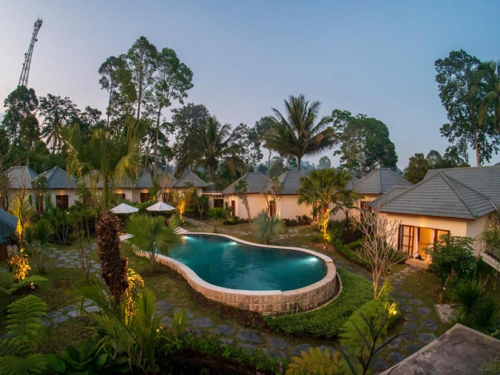
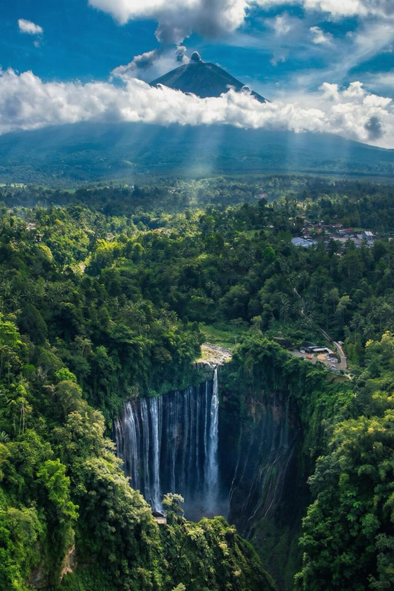
05:05朱安达机场接机（9/23 13:30 萧山 CZ****→深圳→CZ****→雅加达 23:25→03:35 JT***，红眼夜航）
09:30抵 Tumpak Sewu（🚗 4.5h），司机直接开到瀑布区
10:00随当地向导下峡谷 1.5–2h（水汽大、路湿滑 → 防水袋 + 换洗衣）
下午
14:00结束 → 前往 Artha Cottage 入住（已订）
强度：中等宿：Artha Cottage · ¥267.55
D2 · 中秋
9/25
周五
Semeru Terrace 日出 → 转场 Bromo
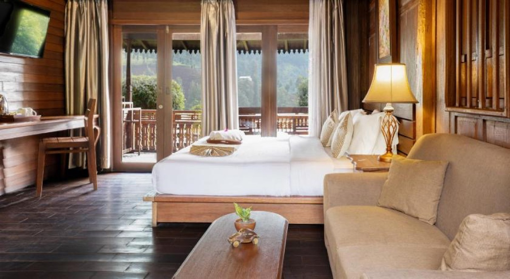
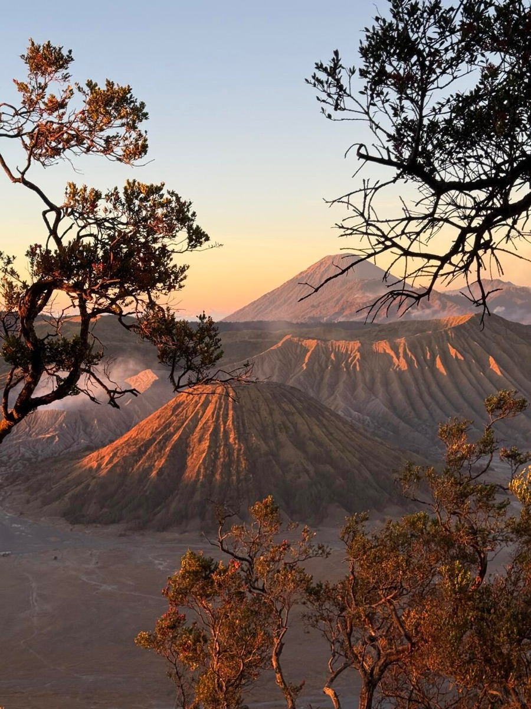
05:00Semeru Terrace 看日出（塞梅鲁火山同框，约 15–20℃，薄外套）
07:00回酒店早餐、休整
下午
12:00退房出发 → 🚗 4h → Bromo
16:00抵 Bawangan 酒店（Bromo 一带）→ 早睡备战凌晨
强度：轻松宿：Bawangan · ¥452.91
D3 · 中秋
9/26
周六
Bromo 日出 → 回泗水 → 飞巴厘岛
02:00私享吉普出发上 Penanjakan 观景台（向导 Kariadi）
上午
05:15日出云海 + 沙海火山口同框（凌晨 5–15℃，穿厚）
07:00下沙海，徒步或骑马（IDR 150–250k）登火山口边缘阶梯
10:00结束 → 回酒店洗澡、退房
11:00出发 → 🚗 3–3.5h → 泗水机场
下午
14:00抵 泗水 SUB T1 —— ⚠️ 只有 1.5h 到起飞，行李别托运、提前换好登机牌
15:30✈ JT*** SUB → DPS（已订 ¥320/人）
17:30落地 DPS（⏰ +1h 时区，实飞 1h）→ 取现/电话卡 → 🚗1.5h 转往乌布
强度：较累（凌晨出发+衔接紧）宿：乌布中心 · CloudSpace ¥291.48
三个点值回票价
📍 景点 · 3 处
🌋 Bromo· 腾格尔火山群 · 日出打卡
02:00 私享吉普上 Penanjakan 观景台看「沙海 + 火山口 + 日出云海」同框；再下沙海徒步或骑马（IDR 150–250k）登火山口边缘阶梯。凌晨 5–15℃，穿厚。向导 Kariadi。
💦 Tumpak Sewu· 千层瀑布 · 下峡谷 1.5–2h
印尼最壮观的「千层」瀑布，水帘从环形崖壁倾泻。需随当地向导下到峡谷底，路湿滑、水汽极重 —— 相机手机务必装防水袋，备换洗衣物与防滑鞋。
🏔 Semeru Terrace· 塞梅鲁火山观景台 · 05:00 日出
Lumajang 的梯田式观景台，正对爪哇最高峰 Semeru（3,676m）。清晨常有云海 + 火山同框，人少、出片。约 15–20℃，带薄外套。
✨ 打卡点 · 1 处
🌄 Teras Semeru（景观餐厅）· 9/25 清晨 · 日出机位
Lumajang 梯田式景观餐厅，正对 Semeru 主峰，05:00 看日出云海的最佳机位，也是热咖啡 + 早餐补给点（9/25 时间轴已排）。
🎬
拍摄执行：Sewu 水帘 + Semeru 云海 + Bromo 沙海，A-roll / B-roll 双线已排入 RUNDOWN 01（11 镜，含 2 个航拍点）。去拍摄页 ›
②PART 2 · 巴厘岛（9/26 晚–10/2 上午，6 天）
9/26 落地直奔乌布中心 CloudSpace（已订，住 1 晚）→ 9/27 早上 Pulina 泳池照 / Alas Harum 二选一 → 12:00 Green Tara SPA → 行李随车进 Sidemen 竹屋 1 晚（漂浮早餐已订）→ 9/28 直奔 Sanur · Sri Phala（已订·可免费寄存行李）→ 9/29 佩妮达往返、晚住水明漾 → 9/30 水明漾连住第 2 晚 + 乌鲁瓦图 Kecak（提前看避国庆人流）+ 金巴兰海鲜 → 10/1 搬金巴兰住最后一晚（靠机场）→ 10/2 12:40 飞龙目岛。
🛁 9/27 Green Tara SPA 12:00（已预约·现场付 ¥502）📸 Pulina 泳池照 / Alas🎋 9/27 Sidemen 竹屋（已付）🏨 9/26 乌布中心 CloudSpace ¥291.48（已订）🏨 9/28 Sanur Sri Phala ¥351.28（已订·可免费寄存行李）🏨 9/29·9/30 水明漾 The Prime 2 晚 ¥1,531.82（已订）🏨 10/1 金巴兰 Balquisse ¥1,481.2（已订 · Plantation Junior Suite · 含早餐）🛁 漂浮早餐（已付）🏞 佩妮达 9/29🔥 Kecak 9/30 18:00 场✈️ 10/2 飞龙目岛
巴厘岛地图 1/3 · 南部机场进岛 → 中部乌布
✈ 机场直达乌布 · 不再坐渡轮
DPS 机场（南部）→ 乌布中心包车 1.5h，比原来渡轮进岛省一半路；9/26 住乌布中心 CloudSpace，步行可达皇宫与市中心小店。
9/27 早上 Pulina / Alas Harum（离乌布中心 25–30min）→ 12:00 SPA → 下午 Sidemen 竹屋（只住 1 晚，行李全部随车上山、不寄存）；9/28 从 Sidemen 直接下山到 Sanur（🚗1h30），不再绕乌布。
9/27 早上 Pulina / Alas Harum（离乌布中心 25–30min）→ 12:00 SPA → 下午 Sidemen 竹屋（只住 1 晚，行李全部随车上山、不寄存）；9/28 从 Sidemen 直接下山到 Sanur（🚗1h30），不再绕乌布。
巴厘岛地图 2/2 · 南部 + 佩尼达岛
📍 后半段节奏 · 佩妮达
9/27：08:00 退房行李全装车 → Pulina / Alas 二选一 → 10:50 出发 → 12:00 SPA → Sidemen 竹屋 1 晚
9/28：漂浮早餐 → 11:00 退房直奔 Sanur（🚗1h30）→ 12:30 抵 Sri Phala
9/29：Sanur 快艇 → 佩妮达西线 → 16:15 回 Sanur → 🚗30–45min 回水明漾
9/30：水明漾连住第 2 晚 → 15:30 情人崖 → Kecak 18:00 场（提前看，避国庆人流）→ 金巴兰海鲜 → 回水明漾
10/1：自由日，中午搬金巴兰最后一晚
10/2：9:30 退房 → 12:40 飞龙目岛
🚢 码头走 Sanur：每天 90+ 班 06:30–17:00 · 45min · IDR 150–250k · 落 Banjar Nyuh 离西线最近；Sri Phala 距码头约 1km，9/29 早班快艇就在家门口。
9/28：漂浮早餐 → 11:00 退房直奔 Sanur（🚗1h30）→ 12:30 抵 Sri Phala
9/29：Sanur 快艇 → 佩妮达西线 → 16:15 回 Sanur → 🚗30–45min 回水明漾
9/30：水明漾连住第 2 晚 → 15:30 情人崖 → Kecak 18:00 场（提前看，避国庆人流）→ 金巴兰海鲜 → 回水明漾
10/1：自由日，中午搬金巴兰最后一晚
10/2：9:30 退房 → 12:40 飞龙目岛
🚢 码头走 Sanur：每天 90+ 班 06:30–17:00 · 45min · IDR 150–250k · 落 Banjar Nyuh 离西线最近；Sri Phala 距码头约 1km，9/29 早班快艇就在家门口。
每日行程 · 时间轴
D1 · 中秋
9/26
周六
泗水飞抵 DPS → 乌布中心 CloudSpace 酒店
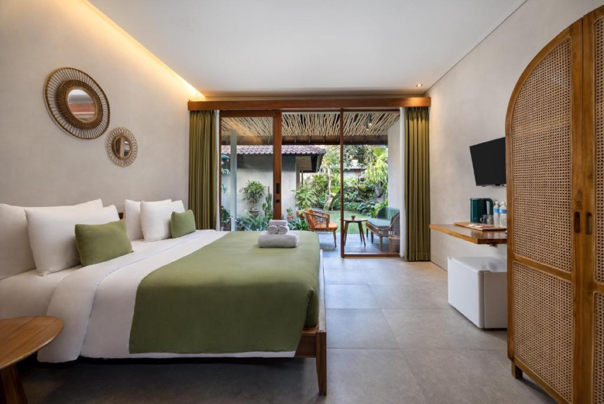
17:30✈ JT*** 落地 DPS（15:30 SUB T1 起飞 · 实飞 1h · ⏰ 落地即 +1h 时区）
晚上
18:00机场取现 / 买电话卡 → 包车 🚗 1.5h → 乌布
19:30入住 CloudSpace（乌布中心 · ¥291.48） → 步行可达皇宫与市中心小店 → 简单休整
20:00步行去市中心吃美食 + 逛小店：Ticket to the Moon（吊床）/ Seminan Coffee 等，基本步行可达 → 回酒店早睡
强度：赶路+休整宿：乌布中心 · CloudSpace ¥291.48
D2 · 中秋
9/27
周日
早上泳池照 / 秋千 → 12:00 Green Tara SPA → 下午进 Sidemen
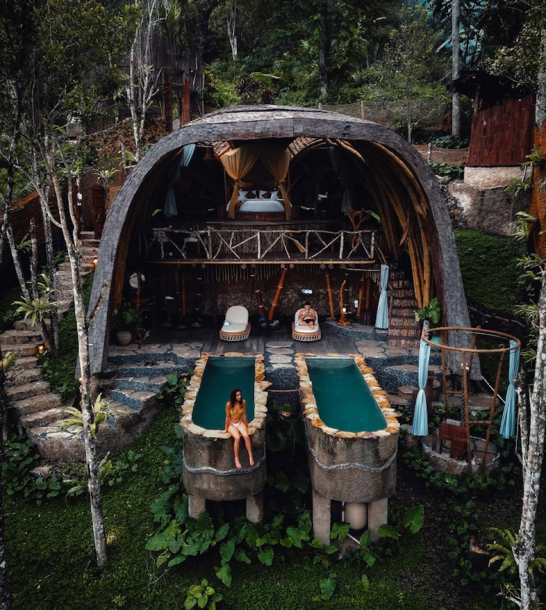
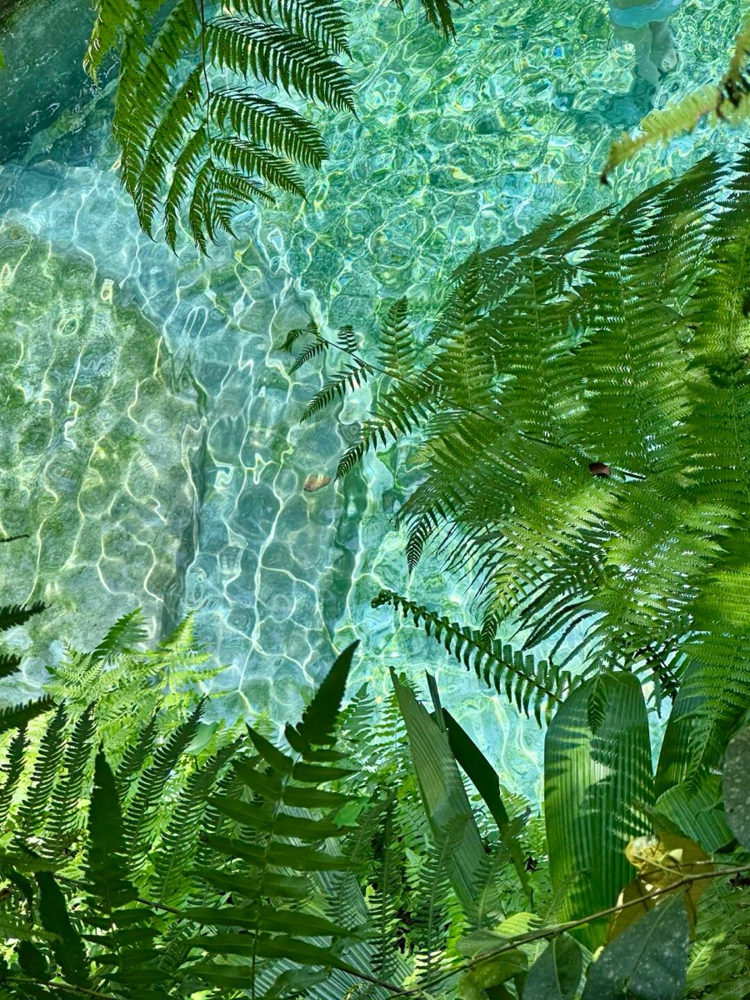
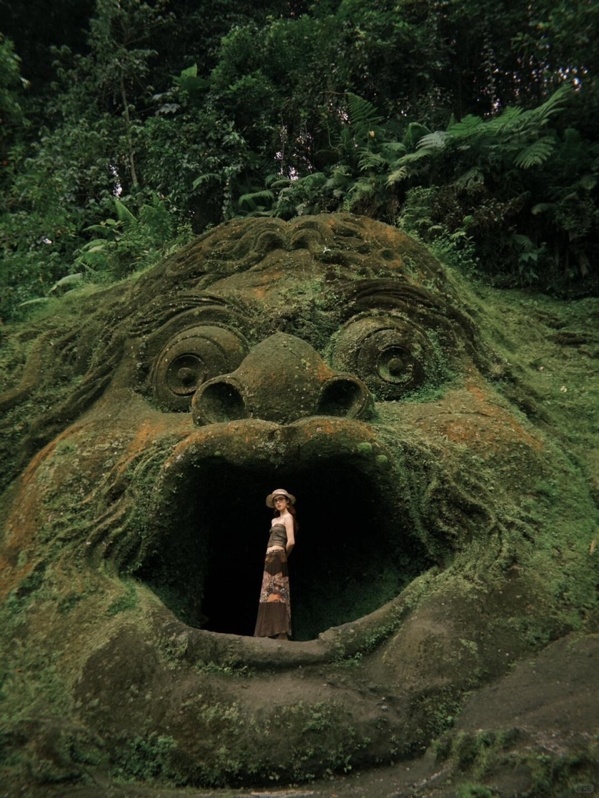
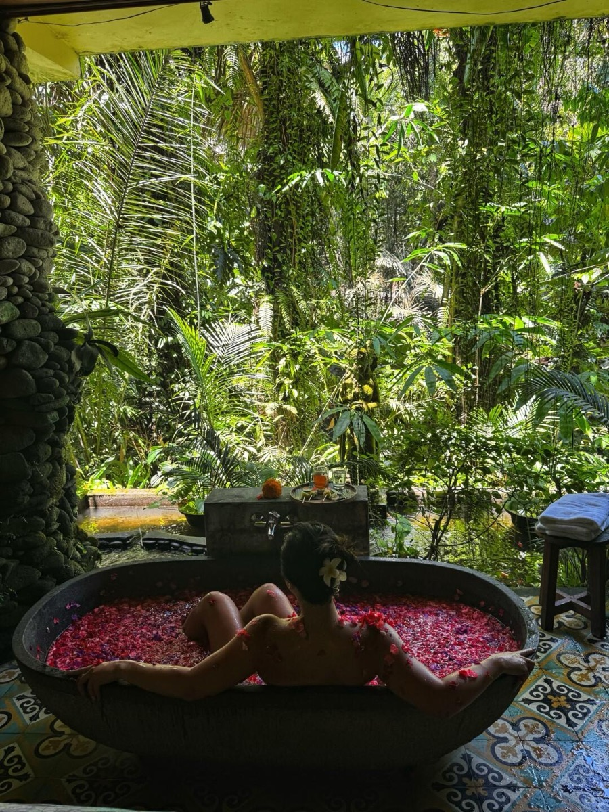
08:00起床、退房（行李全部装车，不寄存）→ 08:30 出发 🚗25–30min → Tegallalang
09:00Pulina Bali 泳池照 或 Alas Harum 秋千 二选一（Tegallalang，离乌布中心 25–30min 车程）＋ 顺便吃早饭 —— 两个都是出片点
10:50🚗25–35min → Keliki（⚠️ 官网要求 11:45 前到；最晚 11:00 必须出发，10:50 走留 20–30min 缓冲）
下午
12:00🛁 Green Tara SPA 12:00–14:00：Earth / Water 各 2h，各 Rp 480,000，+15% 税 = Rp 1,104,000 ≈ ¥502（已预约 · 现场付，刷卡选 IDR 结算）
14:00SPA 结束 → 提前约好的车 → 🚗 1.5h → 东巴厘 Sidemen（已在乌布西北郊，无需折返市中心）
15:30入住 Mountain Bamboo House / Turtle House（已付 IDR 8,650,000 ≈¥3,932 · 入住 14:00，此时到正好）
下午休息 + 拍照 + 化妆（山谷日落 ＋ 竹屋外观空镜，超级出片）→ 晚餐
晚上
晚上⚠️ 竹屋多无空调、楼梯陡、虫多 —— 早睡，明早漂浮早餐
强度：轻松宿：Sidemen · Mountain Bamboo House
D3
9/28
周一
漂浮早餐 → 拍照吸氧 → 下山直奔 Sanur · Sri Phala
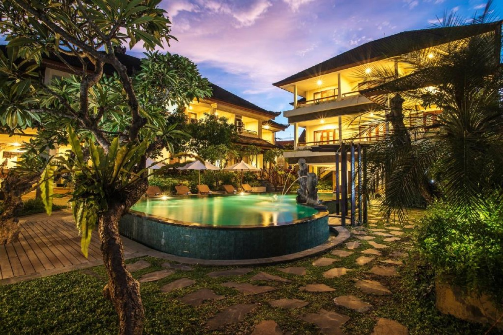
06:00竹屋晨雾 + 日出（阿贡火山方向，航拍点，可选）
08:00🛁 Floating Breakfast 漂浮早餐（已付 IDR 350,000 / 2 人）→ 全程最出片的一镜
09:00再拍点照 → 河谷散步、吸氧，慢慢收
11:00退房 → 行李全带上，Sidemen 直奔 Sanur（不再绕乌布） · 🚗1h30
下午
12:30抵 Sri Phala（¥351.28） → 行李免费寄存前台
12:45步行 10–15min 到 Sanur 海边吃午餐
14:00回酒店办入住 → 休整 / 泳池
15:30Sanur 沙滩步道 + Banjar Nyuh 码头踩点取 9/29 船票 → 18:30 晚餐，早睡备战明天佩妮达
强度：轻松宿：Sanur · Sri Phala Resort & Villa ¥351.28
D4
9/29
周二
一早 Sanur 快艇 → 佩妮达西线（当日往返）→ 傍晚回水明漾
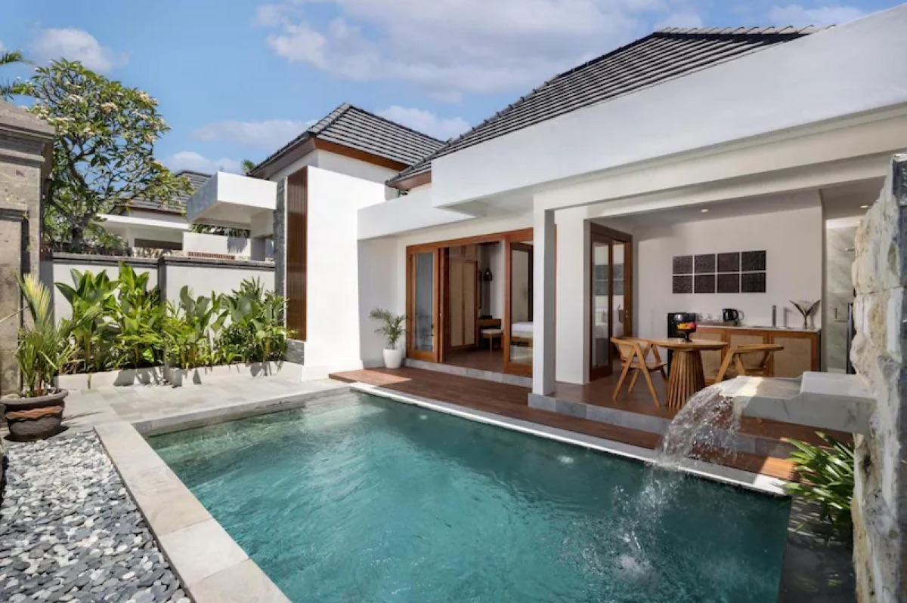
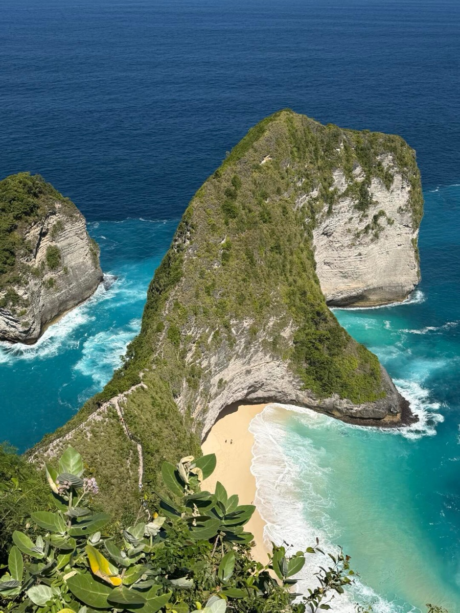
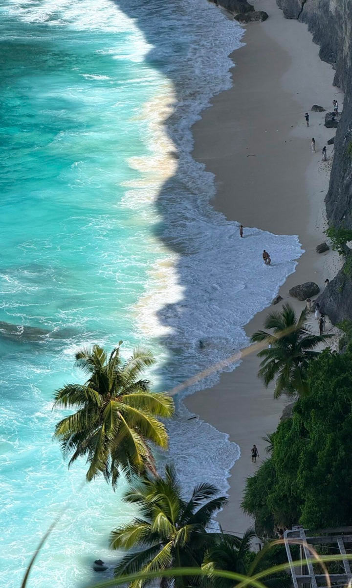
07:30从 Sri Phala 出发 → Banjar Nyuh 码头约 1km（退房后行李免费寄存前台，16:15 回来取）
08:30⛴ 快艇 45min（IDR 150–250k/人，备晕船药，建议线上先订）
09:15落 Banjar Nyuh → 上岛包车（¥300–400/两人）→ Kelingking 精灵坠崖 / 天使浴池 / 破碎海滩
下午
15:30快艇返航 → 16:15 回 Sanur 取行李 → 🚗30–45min → 水明漾入住
晚上
傍晚水明漾海滩日落 + 晚餐（餐饮/咖啡馆最密集，放开了逛）
强度：最满的一天（约 10h）宿：水明漾 · The Prime
D5
9/30
周三
水明漾慢节奏 → 乌鲁瓦图 Blue Point 打卡 + Kecak + 金巴兰海鲜
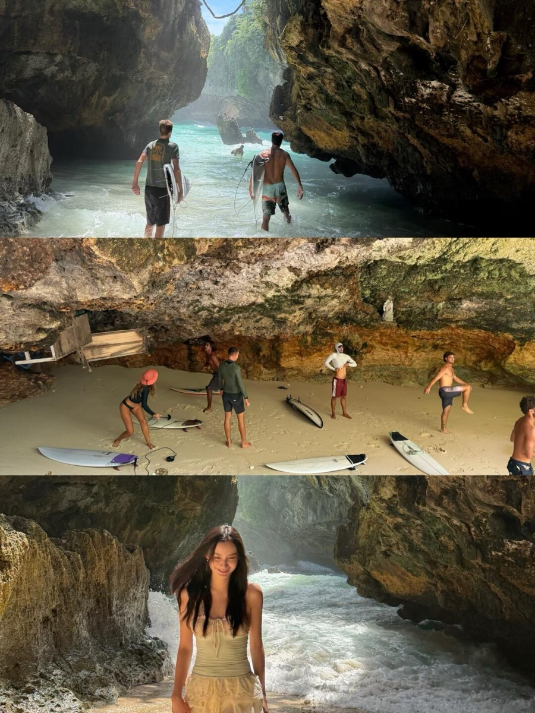
上午水明漾慢生活 / 补觉 / 泳池 / 咖啡馆 → 想冲浪就约一节（还没想好，看状态）；行李留酒店不搬 → 14:30 出发 🚗45–60min → 乌鲁瓦图
下午
15:30情人崖（庙票 IDR 50k，注意野猴）→ 16:45 前到 Kecak 场地
晚上
18:00Kecak 火舞 18:00–19:00 场：10 月日落约 18:10，选这场才有夕阳在舞台后；必须线上预购（提前到 9/30 看，避开 10/1 国庆人流）
20:00金巴兰 Jimbaran 海鲜晚餐（沙滩现烤，两人 ¥300–600）→ 🚗30–45min 回水明漾住
强度：轻松宿：水明漾 The Prime（连住 2 晚）
D6 · 国庆
10/1
周四
自由日 · 水明漾补逛/补吃/补拍 → 中午搬金巴兰 Balquisse
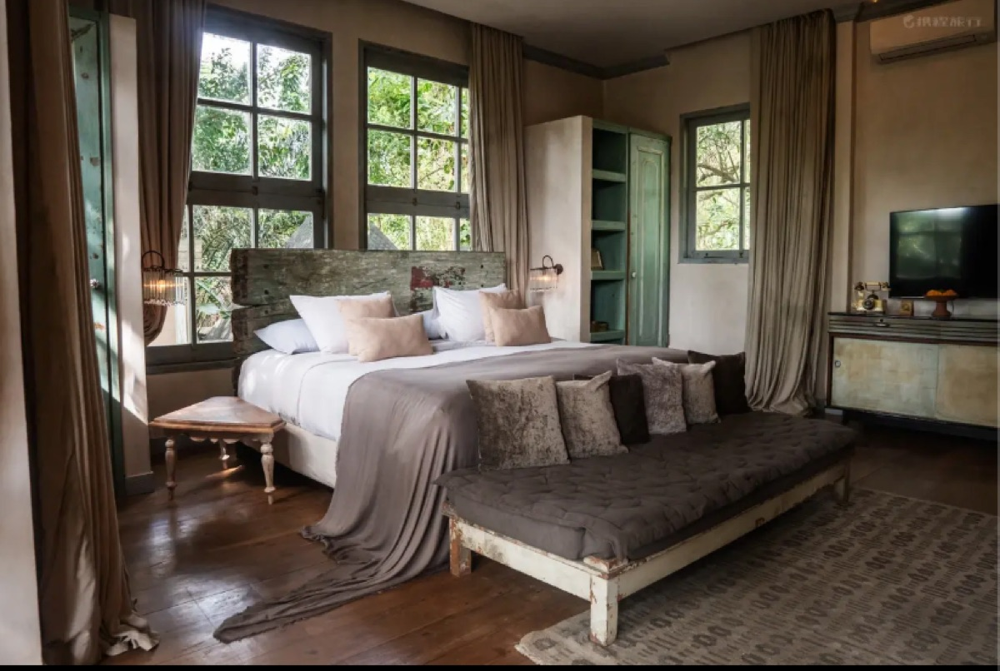
上午睡到自然醒（Kecak 昨晚已看完）→ 水明漾最后扫街：没逛够的店、想吃的馆子、想补的冲浪，这天兜底 → 中午退房 🚗30–45min → 金巴兰 Balquisse 办入住（Plantation Junior Suite · ¥1,481.2 · 含早餐）
全天自由安排：补觉 / 泳池 / 金巴兰沙滩 / 买手信（距机场仅 10–15min，明天 12:40 飞）
晚上
晚上收行李、早睡，明早 9:30 退房
强度：最轻松宿：金巴兰 · Balquisse（含早餐）
D7 · 国庆
10/2
周五
上午飞龙目岛 → 下午在龙目享受
09:30退房 → 10:40 🚗 10–20min → DPS 机场（住金巴兰就是为这天）
下午
12:40DPS ✈ 龙目岛 LOP（已订 ¥378/人，40min）
13:20到 Praya 机场 → 车 1–1.5h → 圣吉吉入住
15:30圣吉吉海滩散步 / 泳池 / 按摩 —— 时间够用
17:30Pura Batu Bolong 海上神庙 / 圣吉吉海滩日落 → 晚餐
强度：飞行宿：圣吉吉 Senggigi
必去 & 可选
🎋 Sidemen Retreats · Mountain Bamboo House / Turtle House· 9/27 住 1 晚 · 已付
9/27 14:00 从 Green Tara Spa（Keliki）出发，🚗1.5h，15:30 抵达（入住时间 14:00，此时到正好）。整个 Sidemen 是梯田河谷，竹屋挂在半山腰，看阿贡火山方向、清晨常有云海，是全程最出片的一晚。
已官网直订：房费 IDR 8,300,000 ＋ Floating Breakfast 漂浮早餐（2 人） IDR 350,000 ＝ IDR 8,650,000 ≈ ¥3,932（招行全币种 Visa 已刷）。
⚠️ 竹屋通常无空调、楼梯陡、虫子多；想拍晨雾就得 06:00 起 —— 反正泳池里还有一顿漂浮早餐，值。
已官网直订：房费 IDR 8,300,000 ＋ Floating Breakfast 漂浮早餐（2 人） IDR 350,000 ＝ IDR 8,650,000 ≈ ¥3,932（招行全币种 Visa 已刷）。
⚠️ 竹屋通常无空调、楼梯陡、虫子多；想拍晨雾就得 06:00 起 —— 反正泳池里还有一顿漂浮早餐，值。
🏨 水明漾 2 晚 + 金巴兰 1 晚· 9/29–10/1
9/29、9/30 连住水明漾：佩妮达回来顺路，餐饮/咖啡馆最密集；9/30 去看 Kecak 当天不用搬行李。
10/1 搬金巴兰 Balquisse 住最后一晚（Plantation Junior Suite · ¥1,481.2 · 含早餐）：距机场仅 10–15min，10/2 早退房去机场最近最省心。
10/1 搬金巴兰 Balquisse 住最后一晚（Plantation Junior Suite · ¥1,481.2 · 含早餐）：距机场仅 10–15min，10/2 早退房去机场最近最省心。
📍 景点 · 4 处
🐒 圣猴森林 + Campuhan 山脊步道· 可选顺路
圣猴森林门票约 ¥50/人，猴子会抢东西，收起墨镜零食；Campuhan 免费，全程 2km 平缓，北端出来就是 Green Tara Spa。本行程不排固定时段，9/26 晚或 9/27 早有体力就顺路走。
🏞 佩尼达岛 Nusa Penida· 当日往返 · 一整天
西线必去：Kelingking 精灵坠崖、Angel's Billabong 天使浴池、Broken Beach 破碎海滩。上岛包车约 ¥300–400/两人最省力（岛上路烂）。
🚢 已定 Sanur 出发：每天 90+ 班 06:30–17:00、45min、IDR 150–250k、落 Banjar Nyuh 离西线最近。9/28 已订 Sanur 的 Sri Phala，距码头约 1km，9/29 早班快艇就在家门口；出发前按当日船班订票，备晕船药。
🚢 已定 Sanur 出发：每天 90+ 班 06:30–17:00、45min、IDR 150–250k、落 Banjar Nyuh 离西线最近。9/28 已订 Sanur 的 Sri Phala，距码头约 1km，9/29 早班快艇就在家门口；出发前按当日船班订票，备晕船药。
🌅 乌鲁瓦图 Uluwatu（情人崖）+ Kecak 火舞· 日落必看 · 9/30
庙票 IDR 50k + Kecak IDR 150k。火舞固定两场 18:00–19:00 / 19:00–20:00，10 月日落约 18:10，选 18:00 场才有夕阳在舞台后；每晚售罄、必须线上预购（改在 9/30 看，避开 10/1 国庆人流）。注意野猴抢东西。
🏛 乌布皇宫 + 市中心小店· 9/26 晚
皇宫本身很小，但周边小店值得逛：Ticket to the Moon（吊床）、Seminan Coffee 等，基本步行可达。9/26 住 CloudSpace（乌布中心），步行来逛 1–2h，吃个晚餐再回酒店。
✨ 打卡点 · 9 处
🏝 Alas Harum Bali（秋千+鸟巢）· 9/27 早二选一
乌布德格拉朗招牌秋千+鸟巢+丛林秘境，买含秋千套餐约 ¥100–150/人。与 Pulina Bali 同片区（Tegallalang，离乌布中心 25–30min 车程），9/27 早上二选一，拍完 10:50 出发去 SPA。
📸 Pulina Bali（泳池照）· 9/27 早二选一
Tegallalang 的咖啡庄园 + 秋千 + 网红泳池拍照点（背景是梯田），还能免费品尝猫屎咖啡。与 Alas Harum 二选一，都是出片点；离乌布中心 25–30min 车程，早上拍完 10:50 出发去 SPA 正好。
🛁 Green Tara Spa · Keliki· 9/27 12:00–14:00 · 已预约
乌布西北郊 Keliki，Jl. RSI Markandya II，离乌布中心 10–20 分钟车程，就在 Campuhan 山脊步道北端 Bangkiang Sidem 旁边。
已预约 · 现场付：两人各 2h 疗程 —— Earth / Water，各 Rp 480,000，加 15% 税费合计 Rp 1,104,000 ≈ ¥502。
⚠️ 官网要求提前 15 分钟到（即 11:45 前），SPA 完直接 🚗1.5h 去 Sidemen 竹屋，不用折返乌布市中心；刷卡选 IDR 结算。
已预约 · 现场付：两人各 2h 疗程 —— Earth / Water，各 Rp 480,000，加 15% 税费合计 Rp 1,104,000 ≈ ¥502。
⚠️ 官网要求提前 15 分钟到（即 11:45 前），SPA 完直接 🚗1.5h 去 Sidemen 竹屋，不用折返乌布市中心；刷卡选 IDR 结算。
☕ Seniman Coffee Studio· 乌布 · 精品咖啡
乌布本地烘焙网红咖啡馆，手冲好且不贵，离 CloudSpace 步行可达，9/26 晚逛皇宫顺路。
🎪 Ticket To The Moon· 乌布 · 手作吊床店
巴厘岛原创吊床品牌总店，伴手礼首选（吊床/挂椅），就在乌布皇宫周边步行圈。
🥐 KOU Bali· 乌布 · 咖啡/烘焙
乌布中心高人气法式烘焙咖啡店，可颂和早餐出名，离皇宫几分钟步行。
🛒 Bintang Supermarket· 水明漾 · 采购补给
水明漾地标性大超市，零食/饮料/防晒/伴手礼一站式，9/29–10/1 住这附近随时补货。
🍹 Potato Head Beach Club· 水明漾 · 海滩俱乐部
水明漾最有名的日落 Beach Club（无边泳池+日落露台），散座不用预订，日落前 1h 到位。
🏄 Blue Point Beach· 乌鲁瓦图 · 冲浪/悬崖海景
悬崖下的海湾，9/30 Kecak 之前顺路打卡；想冲浪就约一节（还没想好，看状态），浪适中、风景出片。
🍽 餐厅 · 5 处
🦞 金巴兰 Jimbaran 海鲜晚餐· 沙滩烧烤
机场南侧海湾，傍晚沙滩现烤龙虾/大虾，两人 ¥300–600；安排在 9/30 Kecak 火舞之后（20:00）正合适，吃完 🚗30–45min 回水明漾住。
🍛 Merah Putih Restaurant· 水明漾 · 印尼精致料理
水明漾高端印尼菜代表，穹顶建筑 + 精致改良菜，晚餐人均 ¥150–250，建议提前订座。
🥩 Barbacoa Bali· 水明漾 · 炭烤
炭火烤肉/海鲜南美风餐厅，氛围放松、肉量扎实，适合 9/29 或 9/30 晚餐。
🍝 La Lucciola· 水明漾 · 海边意餐
海滩边两层意式老牌餐厅，日落位视野好、出品稳定，午餐/晚餐皆宜，离住处步行可达。
🌮 La Santa Rosa· 乌鲁瓦图 · 餐厅/酒吧
乌鲁瓦图悬崖区的墨西哥风餐吧，10/1 看 Kecak 火舞后顺路小酌，日落景观位。
🎬
拍摄执行：Pulina 泳池照 / Alas 秋千 + Green Tara SPA 空镜 + 竹屋晨雾 + 漂浮早餐 + Kelingking 悬崖 + Kecak 火舞，A-roll / B-roll 双线已排入 RUNDOWN 02（11 镜 · 含访谈式旁白 + 2 航拍点）。去拍摄页 ›
③PART 3 · 龙目岛（10/2 中午–10/4 上午，2 天 2 晚）
从巴厘岛飞 40 分钟即达。住西海岸圣吉吉 Katamaran Resort（2 晚已订 ¥2,575.68），租摩托跑南部 Kuta 一线：Bukit Merese 山丘全景 → Tanjung Aan → Mawun。不跳岛。10/4 上午飞科莫多。
✈️ DPS→LOP 40min🏨 Katamaran 2 晚 ¥2,575.68（已订）🛵 租摩托 · 南下 Kuta⛰ Bukit Merese🍗 Ayam Taliwang
龙目岛线路图 · 住圣吉吉 Katamaran · 摩托南下 Kuta
✈️ 怎么进出 & 岛上怎么跑
10/2 巴厘岛 DPS 12:40 ✈ 龙目岛 LOP 13:20（已订 ¥378/人，40min）→ 车 1–1.5h 到西海岸圣吉吉，下午仍能在海边看日落。
10/4 上午 11:05 IW****（Wings Air ATR72 · 已订 ¥785/人）→ 科莫多 LBJ 12:20 到，下午很充裕。
⚠️ 10/4 需 8:00 从圣吉吉出发（车程 1–1.5h + 提前 1h 到机场）。
🛵 岛上租摩托 ¥35–40/天（酒店前台 / 沿街租车店都能租，需国际驾照、戴头盔，加满油约 ¥25）。圣吉吉 → Kuta 摩托约 1.5–2h，是这几天最远的一段 —— 务必天黑前返程，南部山路无路灯。
10/4 上午 11:05 IW****（Wings Air ATR72 · 已订 ¥785/人）→ 科莫多 LBJ 12:20 到，下午很充裕。
⚠️ 10/4 需 8:00 从圣吉吉出发（车程 1–1.5h + 提前 1h 到机场）。
🛵 岛上租摩托 ¥35–40/天（酒店前台 / 沿街租车店都能租，需国际驾照、戴头盔，加满油约 ¥25）。圣吉吉 → Kuta 摩托约 1.5–2h，是这几天最远的一段 —— 务必天黑前返程，南部山路无路灯。
🗺 真实地图参考 · 龙目岛
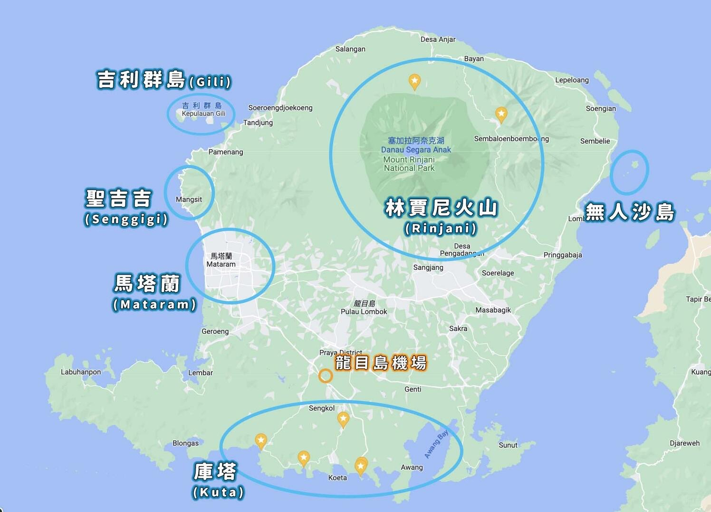
LOP 机场 → 西海岸圣吉吉（住）→ 南部 Kuta / Bukit Merese / Tanjung Aan / Mawun 的位置关系，以及 10/4 上午回机场的路线。
每日行程 · 时间轴
D1 · 国庆
10/2
周五
中午飞抵龙目岛 → 下午就能下海
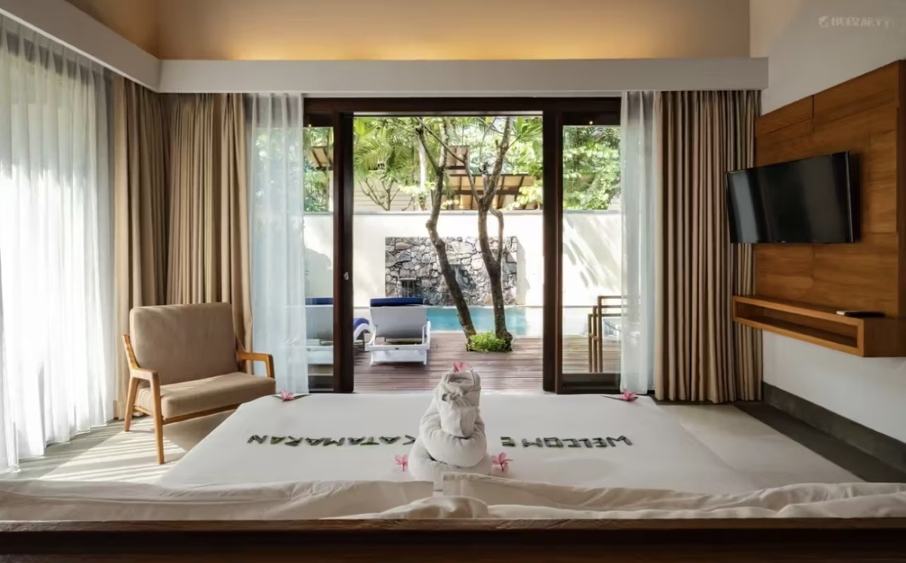
09:30巴厘金巴兰退房 → 10:40 到 DPS（距机场仅 10–20min）
下午
12:40DPS ✈ LOP（已订 ¥378/人，40min）
13:20出 Praya 机场 → 车 1–1.5h → 圣吉吉 Katamaran 酒店入住（15:00 左右到）
15:30圣吉吉海滩散步 / 泳池 / 按摩 —— 时间够用
16:30🛵 先把明天的摩托定好（酒店前台 / 沿街租车店，¥35–40/天，试刹车和轮胎）
17:30Pura Batu Bolong 海上神庙或圣吉吉海滩日落 → Ayam Taliwang 烤鸡晚餐
强度：轻松宿：圣吉吉 Senggigi
D2 · 国庆
10/3
周六
🛵 租摩托南下 Kuta · Bukit Merese 全景 + 南部海滩
08:30酒店取摩托（¥35–40/天，先试刹车 / 轮胎 / 油量）→ 出发南下，顺路 Malimbu 观景台停一脚看海湾
11:00抵南部 Kuta → Tanjung Aan 白沙滩（沙粒粗如胡椒、水色分层，适合下水）
12:30Kuta 镇午餐 + 补给（海边 warung / 咖啡馆集中）
14:00Mawun 半月湾（两侧山头夹着，浪小人少，适合躺着发呆）
16:30⛰ Bukit Merese 登顶（步行 15–20min）—— 俯瞰整个 Kuta 湾 + 日落，龙目岛最佳机位
18:30⚠️ 日落前必须下山返程：回圣吉吉 1.5–2h，南部山路无路灯，绝不夜骑
20:30回圣吉吉 → Ayam Taliwang 烤鸡晚餐
强度：A 较累 / B 躺平宿：圣吉吉 Senggigi · Katamaran
D3 · 国庆
10/4
周日
上午飞科莫多 · 下午反而很充裕
07:30圣吉吉海滩最后走一走 / 早餐 → 退房
08:00出发 → 车 1–1.5h → LOP 机场（国内线提前 1h 到即可）
11:05IW****（Wings Air ATR72 · 已订 ¥785/人）→ 12:20 落地 LBJ
下午
下午入住 Kaliwatu Villas + 镇上补给 + Sylvia 山日落（比原计划多出约 3h，不赶）
强度：飞行宿：Kaliwatu Villas
圣吉吉 & Kuta 南部 打卡 & 美食
📍 景点 · 5 处
⛰ Bukit Merese 山丘· 本次必去 · Kuta 东侧
Kuta 东边的一座草坡小山，步行 15–20min 登顶，能俯瞰整个 Kuta 湾、Tanjung Aan 与连绵海岸线 —— 龙目岛最佳日落 / 全景机位。日落前 1h 上山，带水、穿防滑鞋（坡陡无护栏）。
🌅 Pura Batu Bolong 海上神庙· 圣吉吉地标
建在海礁上的小庙，退潮可走过去，看日落最佳位置；离圣吉吉主街 10min 车，傍晚本地人也来，气氛很好。
🏖 圣吉吉海滩 & 日落散步道· 主沙滩
深色火山沙、浪比南部大（更适合泡海不追求碧绿），傍晚沿沙滩看日落 + 夜市小吃摊，住宿餐饮最集中。
🏖 Tanjung Aan 白沙滩· Kuta 旁 · 可下水
Kuta 东侧的双湾白沙滩，沙粒粗如胡椒、水色分层很干净，适合下水泡着；有本地 warung 和租椅，和 Bukit Merese 顺路，半天连着玩。
🌊 Mawun 半月湾· Kuta 西侧 · 人少
被两侧山头夹住的半月形海湾，浪小、人少，适合躺着发呆游泳；从 Kuta 骑摩托约 15–20min，沿海一路风景很好。
✨ 打卡点 · 1 处
🛵 北线骑行：Malimbu + Puncak Pusuk 猴林· 摩托/包车 40min
Malimbu 观景台俯瞰整条海湾海岸线，继续北行到 Puncak Pusuk 雨林猴群（路边就有，别投喂、管好食物）；半天往返很舒服。
🍽 餐厅 · 2 处
🍗 Ayam Taliwang 烤鸡· 龙目岛招牌菜
香料烤整鸡（辣、香、皮脆），配白饭和 plecing kangkung 空心菜，圣吉吉沿街 Warung 人均 ¥20–40。
🍢 圣吉吉海滩夜市小吃摊· 傍晚 · 沿沙滩
傍晚圣吉吉主沙滩沿线的本地夜市摊，烤鱼/沙嗲/现榨汁，人均 ¥10–30，日落散步顺路解决晚餐。
④PART 4 · 科莫多（10/4 飞抵 · 3D2N 船宿 10/5–10/7 · 10/8 回）
科莫多是孤岛，进出只能飞。10/4 中午到，下午陆地游；10/5（周一）登船 3D2N，帕达尔三色湾、粉红沙滩、寻龙、Manta、蝙蝠日落全收。
⛵ 3D2N 船宿💰 ¥1,300–1,800/人🎫 门票只收现金✈️ 10/8 15:55 飞回
船宿环线图
⛵ Nonauly 船宿 · 已订
Nonauly Deluxe room · 3D2N（10/5–10/7）
总价 15,000,000 IDR≈¥5,700（两人）
定金已付：4,635,000 IDR（含 3% 手续费）≈¥1,755
尾款 10,500,000 IDR ≈¥3,790（10/7 下船现场付）
10/4：12:20 飞抵 LBJ → 陆地游
10/5 10:30：酒店/机场接机登船（行程见下）
10/8：上午自由 → 15:55 飞回
总价 15,000,000 IDR≈¥5,700（两人）
定金已付：4,635,000 IDR（含 3% 手续费）≈¥1,755
尾款 10,500,000 IDR ≈¥3,790（10/7 下船现场付）
10/4：12:20 飞抵 LBJ → 陆地游
10/5 10:30：酒店/机场接机登船（行程见下）
10/8：上午自由 → 15:55 飞回
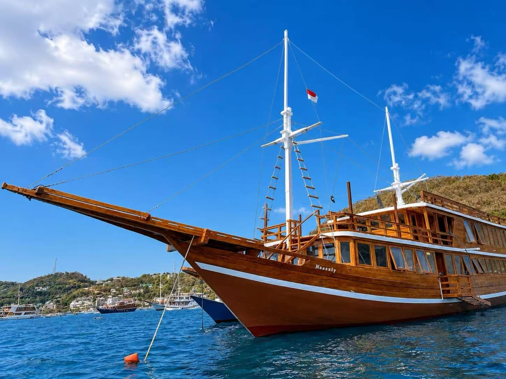
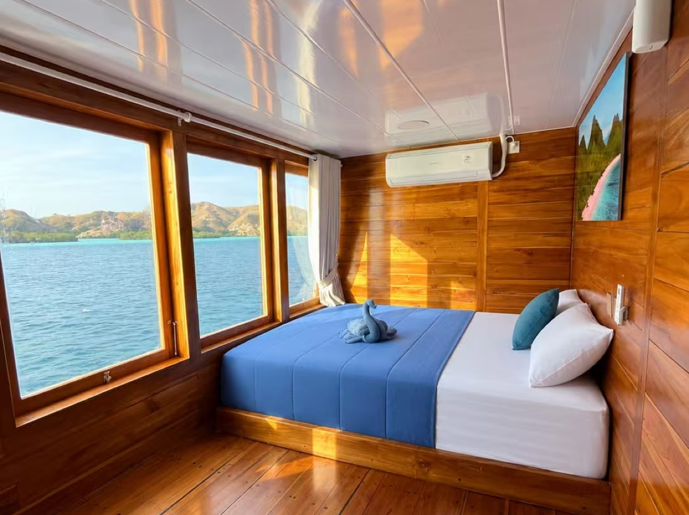
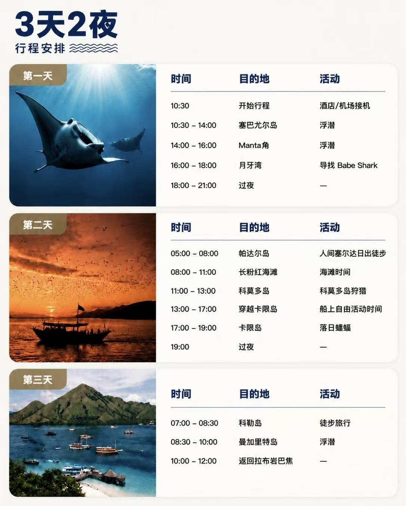
船司官方 3D2N 行程图：D1 浮潜日 → D2 帕达尔+科莫多寻龙+落日蝙蝠 → D3 回港（与上方时间轴一致）。
🗺 真实地图参考 · 科莫多
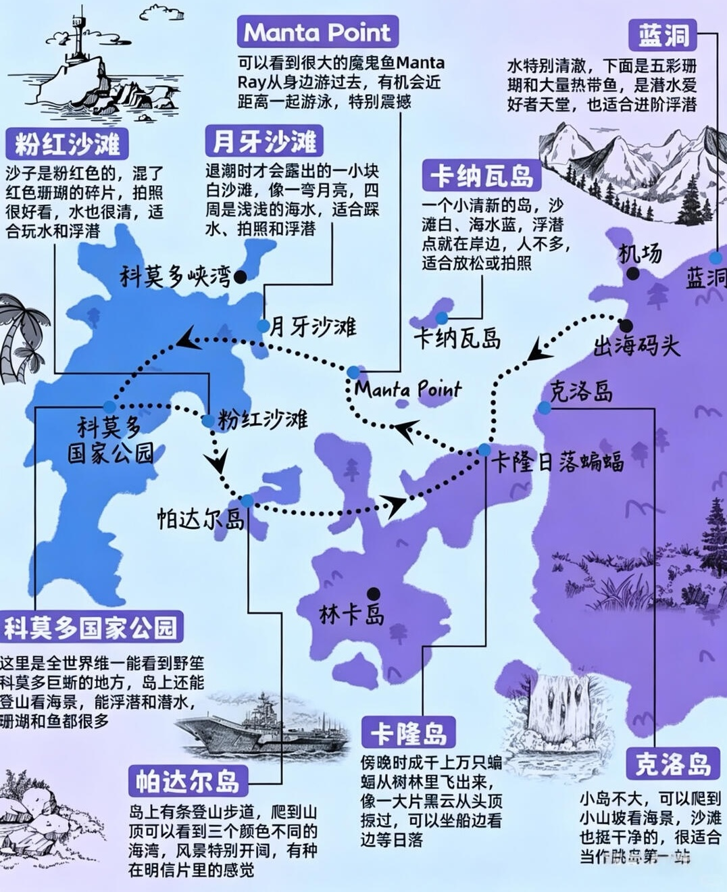
上面是我的船宿环线简图，这张是你存的真实地图——对照看 LBJ 码头、帕达尔、粉红沙滩、林卡/科莫多岛、Manta、卡隆岛 的位置是否一致。
每日行程 · 时间轴
D1 · 国庆
10/4
周日
中午飞抵 LBJ → 入住 Kaliwatu Villas → 下午从容补给
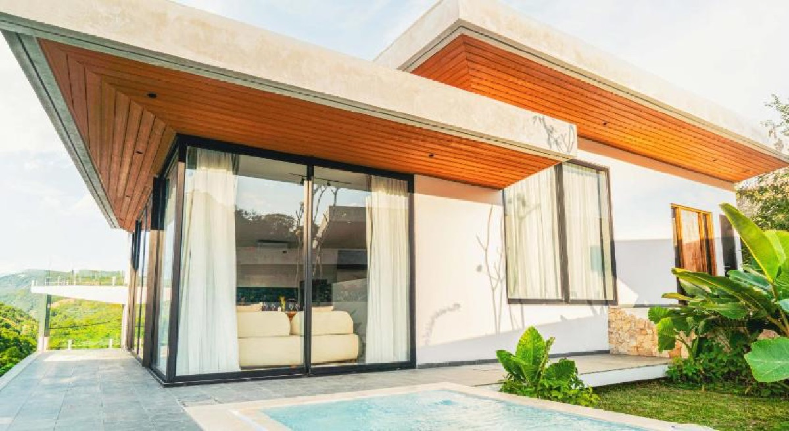
11:05IW****（龙目岛 LOP → 科莫多 LBJ，1h15m · 已订 ¥785/人）
下午
12:20落地 LBJ → Kaliwatu Villas 入住、午餐（¥990.75 · 不含餐 · 比原计划多约 3h）
14:00镇上补给：取现金（门票只收现金）、防晒、晕船药、零食
16:30Sylvia 山看日落 / 码头散步（石镜洞今天去得成，不必留到 10/8）
晚上
晚上确认明早 10:30 登船时间、备好现金门票
强度：轻松宿：Kaliwatu Villas（不含餐）
D2 · 国庆
10/5
周一
Nonauly 船宿 D1 · 浮潜日
10:30酒店/机场接机登船 → 出发
10:30–14:00塞巴尤尔岛 Sebayur 浮潜（珊瑚+鱼群）
下午
14:00–16:00Manta 角 与 4 米魔鬼鱼同游（别碰别追）
16:00–18:00月牙湾 找 Babe Shark 小鲨鱼
晚上
18:00船上过夜（晚餐+星空）
强度：出海宿：⛵ 船上
D3 · 国庆
10/6
周二
Nonauly 船宿 D2 · 帕达尔+寻龙日
05:00–08:00帕达尔岛日出徒步（人间塞尔达：三色海湾同框）
08:00–11:00长粉红海滩 海滩时间（珊瑚碎屑粉色沙，浮潜）
11:00–13:00科莫多岛寻龙（持证向导，保持 5 米；门票+税只收现金约 ¥450–600/人）
下午
13:00–17:00穿越卡限岛 · 船上自由活动
17:00–19:00卡限岛 落日蝙蝠（上万果蝠出巢）
晚上
19:00过夜（船上）
强度：出海+徒步宿：⛵ 船上
D4 · 国庆
10/7
周三
Nonauly 船宿 D3 · 回港日 → 夜宿 Ra Signature
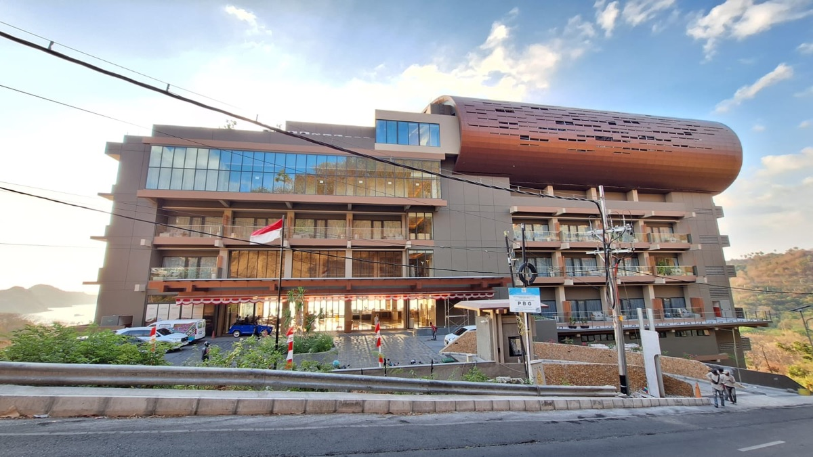
07:00–08:30科勒岛 Kelor 徒步（小岛登顶看全景）
08:30–10:00曼加里特岛 Manjarite 浮潜（珊瑚花园）
10:00–12:00返回 Labuan Bajo → 下船 · 付尾款 ¥3,790（10,500,000 IDR）
下午
下午入住 Ra Signature（¥876.52 · 含晚餐 + 早餐 · 酒店送机）→ 镇上休整 / 买手信
强度：出海宿：Ra Signature（含晚餐+早餐）
D5
10/8
周四
上午自由 → 15:55 飞回杭州
上午Ra Signature 早餐 → LBJ 自由活动 / 买手信 → 午后酒店送机（含在房费内）
下午
15:55QZ*** → 雅加达 17:20 → 机场商圈逛 → 10/9 00:25 SC***
10/906:55 到厦门 → 行李寄存机场/车站 → 中山路步行街（沙茶面/花生汤/海蛎煎）→ 沙坡尾文艺渔港 → 环岛路海边
晚上
18:00回机场取行李 → 20:05 SC**** → 21:40 萧山
强度：返程宿：✈ 机上 → 家
船宿必打卡
📍 景点 · 5 处
⛰ 帕达尔岛 Padar· 人间塞尔达 · 日出徒步
登顶俯瞰黑/白/粉三色海湾同框，「现实版塞尔达」，D2 清晨 5:00 出发日出光线最出片，登山 30–40 分钟。
🌸 粉红沙滩 Pink Beach· 亚洲罕见
珊瑚碎屑染出的粉色，上午 9 点前最粉，浮潜看珊瑚鱼群。
🦎 林卡/科莫多岛寻龙· 3米巨蜥 · 持证向导
科莫多龙对血腥味敏感，生理期务必提前告知向导；保持 5 米、别跑别背对。门票+税只收现金约 ¥450–600/人。
🏖 Taka Makassar· 拖尾白沙洲 · ⚠️ 本次不含
退潮出现的白色沙洲，航拍出片——但 Nonauly 3D2N 行程不含此点，本次略过，不用惦记。
🦇 卡隆岛 Kalong 蝙蝠· 黄昏上万蝙蝠出巢
D2 傍晚 17:00–19:00 卡限岛落日蝙蝠（Kalong 即"蝙蝠"，船上看即可，配夕阳非常壮观）。
✨ 打卡点 · 2 处
🌊 Manta Point· 与 4 米魔鬼鱼同游
7–9 月遇见率最高，浮潜即可看，别碰别追。
💆 Manta Spa· Labuan Bajo · 镇上
镇上口碑 SPA，船宿 3 天后 10/7 回港晚或 10/8 早做个按摩放松，离 Kaliwatu 步行可达。
🍽 餐厅 · 1 处
🍽 Ra Signature· 10/7 回港夜宿 · 含晚餐
Labuan Bajo 海景酒店餐厅，10/7 回港夜宿于此（含晚餐+早餐），10/8 早餐后镇上自由活动/买手信，下午送机 QZ***。
🎬
拍摄执行：帕达尔长焦 + 蝙蝠日落 + 船上日常，A-roll / B-roll 双线已排入 RUNDOWN 03（10 镜，全程禁飞 → 长焦 + 水下为主）。去拍摄页 ›
⑤签证 & 支付方式
eVOA 落地签三步走 + 换汇策略。本次不经吉隆坡中转，不涉及马来西亚 MDAC。
🛂 IDR 500,000≈¥230/人💳 Visa/Master 支付💵 现金 ¥1,200–1,500/人
eVOA 落地签 · 三步
STEP 1 · 出发前 1–7 天
官网申请 eVOA
只认官方域名 molina.imigrasi.go.id。注册 → 填护照/入境日期/第一晚酒店 → 上传护照页(<200KB) → Visa/Mastercard 支付（不支持银联） → 邮箱收 PDF，打印备用。
STEP 3 · 落地通关
e-VOA 专用通道
走专用通道 5–15 分钟通关。必备：护照有效期 ≥6 个月（从入境日算）+ 返程机票 PDF + 第一晚酒店订单 + 国际信用卡。
换汇 & 支付
| 方式 | 汇率/手续费 | 建议 |
|---|---|---|
| 当地 ATM 取现（BCA/Mandiri/BNI） | 汇率最优，单笔手续费约 ¥10–20 | 银联/Visa 均可；机场到达厅就有 ATM，随用随取，最推荐；龙目岛/科莫多镇上 ATM 也充足 |
| 国内银行预约换印尼盾 | 汇率一般，小币种可能缺货 | 中国银行/工商银行 App「外币预约」提前 1–3 天；适合第一晚应急现金 |
| 授权换汇店（巴厘岛市区） | 比机场好 5–10% | 认准挂「PVA Berizin」蓝色贴纸的店，路边摊常见换钞骗局，别贪 |
| 刷卡 | Visa/Master 最优，银联巴厘岛可用 | 酒店/餐厅/船宿尾款刷卡；eVOA 和酒店押金需要国际卡 |
💰
每人备 ¥1,200–1,500 等值印尼盾现金（约 260–320 万 IDR）。主要现金场景：科莫多公园门票+税 ¥450–600/人（只收现金）、船宿船员小费 ¥70–110/天、东爪哇包车尾款、龙目岛路边摊与小费。其余刷卡。不要全带现金。
⑥预算明细 · 踩坑提醒 · 行前清单
17 天两人中上配置。想压预算也有路径，见文末提示。
💰 人均 2.4–2.9 万🏨 住宿 / 🚗 路费 已分列
两人预算明细
📊 预算占比 · 人均口径（各项中点估算）
人均合计
¥2.4–2.9万
机票 · 21.6%人均 ¥5,786
住宿 · 23.8%人均 ¥6,376
路费 · 7.6%人均 ¥2,035
科莫多 · 12.6%人均 ¥3,375
活动体验 · 5.4%人均 ¥1,451
餐饮 · 20.6%人均 ¥5,525
签证与杂费 · 8.3%人均 ¥2,230
占比按各项金额中点估算；两人合计区间下限 ¥4.86 万 / 上限 ¥5.85 万，结构比例相近。机票+住宿+餐饮三项约占 66%。
容易踩坑的衔接点
⚠️
9/26 衔接最险 · 已定 JT*** 15:30：14:00 到泗水机场只有 1.5h 到起飞。三个保命动作：①出发前跟司机书面确认 11:00 准时从 Bawangan 发车；②行李不托运、登机牌提前换好；③Bromo 那天别恋战，10:00 结束就走。冲锋衣（凌晨 5–15℃）、前一晚早睡。
⚠️
10/4 中午到 LBJ，船宿 10/5（周一）才发船：共享船宿固定周一/周五启航，10/4 当天无 3D2N 班期，下午陆地游（石镜洞+Sylvia 日落）作缓冲，别误订成 10/4 登船。
⚠️
科莫多航班爱延误/取消：若赶不上船宿，可花约 ¥150 拼快艇追船。
⚠️
eVOA 仿冒网站 + 银联不能用：只认 molina.imigrasi.go.id；支付只接受 Visa/Mastercard；护照有效期从入境日算 ≥6 个月。
⚠️
泗水→巴厘岛 +1h：泗水用爪哇时间 WIB(UTC+7)，飞抵巴厘岛即 +1h；约车/约船宿时间记得对时区。
⚠️
佩妮达 9/29 是最满的一天：约 10h（Sri Phala 到 Banjar Nyuh 码头仅约 1km → 45min 船 → 西线 → 返航）。退房后行李免费寄存在 Sri Phala 前台，16:15 回 Sanur 取了再去当晚住处。快艇会晕船，备晕船药；上岛包车比摩托安全省力。船班若取消：改东巴厘一日（Tirta Gangga 水宫 / Lempuyang 天门 / Virgin Beach）。
🎋
Sidemen 只住 1 晚（9/27），但行李全部随车上山：竹屋在半山腰、楼梯陡 —— 只把过夜包 + 拍摄设备背上楼，大件请司机 / 管家帮忙抬。好处：9/28 从 Sidemen 直奔 Sanur（🚗 1h30），省掉回乌布折返取件的 40min，也不用担心寄存件忘拿。
⚠️
科莫多龙安全：生理期女生提前告知向导（对血腥味敏感）；保持 5 米、别跑别背对。
行前清单
eVOA 电子落地签（molina.imigrasi.go.id，出发前 1–7 天）
eVOA PDF 打印 + 手机存档
e-CD 海关申报（入境前 24h，ecd.beacukai.go.id）
护照有效期 ≥6 个月 + 2 页空白
机票订单打印（9/23 泗水 / 10/2 龙目 / 10/4 科莫多 / 10/8 回程）
住宿订单打印：CloudSpace 9/26 / 竹屋 9/27 / Sri Phala 9/28 / The Prime 9/29·9/30 / Balquisse 10/1 / Katamaran 10/2·10/3 / Kaliwatu 10/4 / Ra Signature 10/7（eVOA 只需填第一晚）
Visa/Master 信用卡（确认开通境外支付）
印尼盾现金每人 ¥1,200–1,500（或 ATM 现取）
冲锋衣/抓绒（火山凌晨 5–10℃）
登山鞋 + 轻便徒步鞋 + 头灯
相机/无人机防水袋（Sewu 峡谷水汽极重）
晕船药 + 肠胃药 + 感冒药 + 蚊虫药
高倍防晒 + 浮潜袜 + 泳衣 + 防水袋
浮潜面罩（自带更卫生，船宿 3 天每天下水都用它）
高筒鞋套（Bromo 沙海/火山灰，护住鞋和小腿，回来一抖就干净）
口罩（Bromo 沙尘 + 硫磺味，N95/KN95 最好）
驱蚊液（Sidemen 竹屋、海边傍晚蚊虫多）
Green Tara Spa 预约确认单（9/27 12:00 · 现场付 Rp 1,104,000）
欧标双圆孔转换插头（220V）
印尼电话卡/eSIM（Telkomsel 信号最好）
旅行保险（火山徒步+浮潜+延误）
⑦拍摄与设备 · 三条片子怎么拆
人文/文艺向、带点小幽默的探索型 vlog。带无人机 + 相机 —— 本篇先把能不能飞、要办什么手续钉死，分镜后面再填。
🎬 3 支：东爪哇 / 巴厘 / 科莫多🚁 科莫多公园内不飞🔋 电池必须随身📋 出发前须办 SIPP-TA
三条片子怎么拆
VIDEO 01
东爪哇 · 地球的粗粝感
素材：Sewu 峡谷水汽 + Semeru Terrace 日出 + Bromo 沙海凌晨（吉普车队灯串）。
调性：探索 / 自然力量 · 目标片长 4–6min
▶ RUNDOWN 01 已就绪（11 镜 · 2 航拍点 · A/B-roll 双线）
调性：探索 / 自然力量 · 目标片长 4–6min
▶ RUNDOWN 01 已就绪（11 镜 · 2 航拍点 · A/B-roll 双线）
VIDEO 02
巴厘岛 · 山谷与悬崖
素材：Pulina 泳池照 / Alas 秋千 + Green Tara SPA 空间 + Sidemen 竹屋晨雾 + 漂浮早餐 + Kelingking 悬崖 + Kecak 火舞。
调性：文艺 / 轻幽默 / 慢生活 · 目标片长 5–7min
▶ RUNDOWN 02 已就绪（11 镜 · 含访谈式旁白 + 2 航拍点 + A/B-roll 双线）
调性：文艺 / 轻幽默 / 慢生活 · 目标片长 5–7min
▶ RUNDOWN 02 已就绪（11 镜 · 含访谈式旁白 + 2 航拍点 + A/B-roll 双线）
VIDEO 03
科莫多 · 船上的三天
素材：帕达尔日出平台 + 粉红沙滩 + 寻龙 + Manta + 卡隆蝙蝠日落（全程地面/船拍）。
调性：探险 / 史前感 · 目标片长 5–8min
▶ RUNDOWN 03 已就绪（10 镜 · 禁飞 → 长焦 + 水下）
调性：探险 / 史前感 · 目标片长 5–8min
▶ RUNDOWN 03 已就绪（10 镜 · 禁飞 → 长焦 + 水下）
💡 也可能压成 2 支（东爪哇+巴厘合并 / 科莫多独立）—— 等素材回来再定。现在先把每段的必拍镜头清单想清楚。
无人机能不能飞 · 逐地速查
| 地点 | 能否飞 | 依据 / 费用 / 注意 |
|---|---|---|
| Tumpak Sewu Semeru Terrace | ✅ 可飞 | 非国家公园，无 SIMAKSI 要求。⚠️ 峡谷内水汽极重、崖壁遮挡易丢信号与 GPS —— 先起飞设定好返航点再看景 |
| Bromo （TNBTS 国家公园） | ⚠️ 现场定 | 需 SIMAKSI + IDR 2,000,000/架/天 ≈¥909，可让向导 Kariadi 代办。禁飞火山口上方（火山灰磨电机 + 磁场干扰致 GPS 失效）、禁飞 Pura Luhur Poten 寺庙上方。 你选了「现场看情况」：不预办，到时看 Ranger 尺度 —— 但国家公园内黑飞罚则与科莫多同等（没收 + 高额罚款） |
| 巴厘南部 Kuta / Seminyak / Canggu / Jimbaran / Sanur / Uluwatu | ❌ 禁飞 | 全部落在 Ngurah Rai (DPS) 机场 15km 禁飞圈内 |
| Ubud / Campuhan / Keliki / 德格拉朗 Sidemen | ⚠️ 需同意 | 在 15km 圈外，但需当地 banjar（村委）同意；Perda Bali 12/2024 规定寺庙 5km 圈，pecalang（村警）有权制止并扣人 |
| Nusa Penida | ✅ 全程最值得飞 | 在 DPS 15km 圈外，寺庙限制少。Kelingking 精灵坠崖 / Broken Beach / Atuh 是全程最佳航拍点 |
| 龙目西海岸 圣吉吉 / 吉利三岛 / Malimbu | ✅ 可飞 | 距 LOP 机场约 50km，在禁飞圈外 |
| 科莫多国家公园 帕达尔 / 粉红沙滩 / 科莫多岛 / 卡隆 | ❌ 决定不飞 | SIMAKSI + IDR 200–210 万/天，且需印尼 PUKTA 飞手执照（外国人旅游签拿不到）、每次限飞 15 分钟、限高 120m、须 Ranger 在场。即使持证，Kalong 蝙蝠岛 / Loh Buaya / Loh Liang / 核心区仍一律禁飞。 替代方案：帕达尔日出平台用长焦 + 船上拍；航拍素材找 LBJ 当地持证飞手合作，或后期补素材 |
| LBJ 镇 / Sylvia 山 | ❌ 禁飞 | Komodo 机场 (LBJ) 为 Class D 管制空域 + 机场 15km 规则 |
通用红线 · 印尼 PM 37/2020
✅保持在目视范围内，限高 150m AGL
✅仅白天飞行，能见度 ≥4.8km
✅距人 / 车 / 船 ≥30m
❌禁止夜飞
❌禁止从移动的船 / 车上起降
❌禁止飞越寺庙、军警设施、总统府
❌禁止飞越别墅 / 酒店私域
⚠️DJI 已于 2025-01-13 取消硬地理围栏，合规责任全在飞手
出发前必办（别拖到落地）
📋
SIPP-TA 无人机注册：2025-01 起强制、不分重量（DGCA 008/2025 已取消 72 小时宽限）。需护照号 + 机身序列号 + 飞行日期，审批 3–5 个工作日 —— 至少提前 1 周办。
🛃
e-CD 海关申报：ecd.beacukai.go.id，电子设备总值 >USD 1,500 需申报，上限 2 架无人机 / 5 台设备。申报记录随身备查。
🛡
建议买第三者责任险：覆盖无人机伤人 / 损物，部分国家公园与船东会要求出示。
电池与收纳（锂电池随身，禁托运）
🔋 锂电池 —— 只能随身，禁托运
<100Wh：无需批准，随身带
101–160Wh：需航司批准，且 ≤2 块
>160Wh：禁止携带
飞行前放电至 约 30%，装防火 LiPo 袋，电极贴胶带。
锂电池按规定必须随身、禁托运 —— 哪怕你带了托运箱，也别把电池塞进任何要交运的包。
101–160Wh：需航司批准，且 ≤2 块
>160Wh：禁止携带
飞行前放电至 约 30%，装防火 LiPo 袋，电极贴胶带。
锂电池按规定必须随身、禁托运 —— 哪怕你带了托运箱，也别把电池塞进任何要交运的包。
🎒 船上与峡谷的防护
科莫多船宿 3 天：防水硬箱 + 干燥剂（海上盐雾 + 高湿是设备杀手）
Sewu 峡谷：水汽极重，机身装防水袋，进峡谷前先擦干镜头
SD 卡与机身分开放，避免一起丢 / 一起进水
多带一张卡 + 一块电池（船上充电窗口有限）
Sewu 峡谷：水汽极重，机身装防水袋，进峡谷前先擦干镜头
SD 卡与机身分开放，避免一起丢 / 一起进水
多带一张卡 + 一块电池（船上充电窗口有限）
拍摄 RUNDOWN · 三条片子分镜表
🎬
用法说明：下表是拍摄现场的执行 rundown（制片向）。素材列标注 A / B / A+B —— A-roll（主素材）：人物主体、叙事动作、口播/访谈，承载内容输入；B-roll（空镜/补充）：风景、细节、氛围、过场，用来穿插过渡；A+B＝人物主体与空镜同框（如剪影落在日出里），剪辑时主 A、intercut B。每条片子都排了 A-roll 与 B-roll 双线（A B 都带）。AI 后期列标注该镜处理方式：静帧抽象化 / AI 视频串联 / —（直出）。✅＝可飞无人机，❌＝禁飞（对照上方速查表）。景别：特写/中景/全景/大全/航拍/微距/延时/升格。
RUNDOWN 01 · 东爪哇「地球的粗粝感」（9/24–9/26 · 目标 4–6min）
调性：探索 / 自然力量 · BGM：低音铺底 + 风声白噪 · 开场一句话口播：「凌晨五点的泗水机场，困，但值得。」
| 镜 | 时段·场景 | 画面内容 | 素材 A/B | 景别·运镜 | AI 后期 | 声音·备注 |
|---|---|---|---|---|---|---|
| S01 | 9/24 05:05 泗水机场 | 拖着行李找司机、上车（凌晨机场的黑色幽默开场） | A | 全景·跟拍 | — | 同期声：环境 + 哈欠 |
| S02 | 车程 → Lumajang | 车窗外爪哇乡村飞驰；手机录口播 | A | 车拍·侧窗 | — | 口播旁白 |
| S03 | 09:30 Tumpak Sewu 观景台 | 千层瀑布 + 水汽全貌，人物惊叹背影 | A+B | 大全·航拍✅ | 水汽抽象静帧 | 瀑布声浪压过一切 |
| S04 | 峡谷底部 | 仰拍水帘、被淋湿大笑 | A | 广角·仰拍 | — | 水声 + 笑场（vlog 高光） |
| S05 | 峡谷内 | 水帘微距、水珠慢动作 | B | 微距·固定 | AI 抽象：水帘→水墨线条 | 白噪 + 渐入音乐 |
| S06 | 9/25 05:00 Semeru Terrace | 云海 + 塞梅鲁日出，人物剪影侧身 | A+B | 航拍✅·长焦 | 云海抽象静帧 | 风声 → 音乐起 |
| S07 | 9/26 02:00 Bromo | 吉普车队灯串驶入沙海 | B | 慢门·延时 | — | 引擎声 + 黑暗 |
| S08 | 05:15 Penanjakan | 日出云海 + 沙海火山口同框，人物依偎剪影 | A+B | 长焦·固定 | 剪影抽象静帧 | 音乐高潮（全片情绪顶点） |
| S09 | 沙海 | 徒步 / 骑马剪影（逆光） | A | 全景·逆光 | — | — |
| S10 | 火山口阶梯 | 登顶，回头对镜头笑 | A | 中景·低机位 | — | 心跳 / 鼓点 |
| S11 | 14:00 泗水机场 → JT*** | 狂奔值机（节奏加快、幽默）→ 窗外云层 | A+B | 跟拍 → 空镜 | 云层抽象转场 | 音乐切快 → 淡出 |
RUNDOWN 02 · 巴厘岛「山谷、SPA 与悬崖」（9/26–10/2 · 目标 5–7min）
调性：文艺 / 轻幽默 / 慢生活 · BGM：木吉他 + 轻电子 · 开场一句话口播：「终于不用凌晨起床了。」
| 镜 | 时段·场景 | 画面内容 | 素材 A/B | 景别·运镜 | AI 后期 | 声音·备注 |
|---|---|---|---|---|---|---|
| S01 | 9/26 19:30 乌布市中心 | 入住 + 逛小店：吊床店 Ticket to the Moon、咖啡馆 Seminan Coffee（慢生活定调） | A | 中景·手持 | — | 轻快吉他 + 街头声 |
| S02 | 9/27 09:00 Pulina / Alas | 泳池照 或 荡秋千（惊恐→大笑）二选一，同伴在下面拍 | A | 特写 + 全景 | — | 笑声（幽默担当） |
| S03 | 9/27 12:00 Green Tara Spa | SPA 空间空镜：精油、石臼、纱幔光影、庭院绿植（人物仅手部/背影，不出脸） | B | 特写·固定 + 微距 | 纱幔光影抽象 | 水滴 / 轻音乐 |
| S04 | 9/28 06:00 Sidemen 竹屋 | 晨雾中的竹屋俯拍（Mountain Bamboo House 外观全貌） | B | 航拍✅·大远景 | 晨雾抽象静帧 | 鸟鸣 |
| S05 | 竹屋泳池 | 🛁 漂浮早餐 + 访谈式聊天（聊「为什么要来印尼」）—— 全片最出片的一镜 | A | 俯拍 + 中景·固定 | 早餐俯拍抽象静帧 | 同期声（可做全片旁白素材） |
| S06 | 9/29 佩妮达 Kelingking | 悬崖 + 海，崖边剪影、跳起 | A+B | 航拍✅·大全 | 悬崖抽象静帧（保主体） | 海风 |
| S07 | Broken Beach | 天然拱桥全景 | B | 航拍✅ | — | 浪声 |
| S08 | 9/30 Uluwatu Kecak | 火舞火焰特写、人群剪影、举手机拍 | A+B | 特写·低光 | — | 火舞吟唱（保留一段完整同期） |
| S09 | 金巴兰 | 海鲜特写、干杯、掰螃蟹笑场 | A | 特写 + 中景 | — | 笑场收尾 |
| S10 | 10/1 自由日 | 补觉 / 泳池 / 金巴兰沙滩（轻松收尾，可选素材） | B | 中景·手持 | — | 轻音乐 |
| 尾 | 10/2 登机前 | 回望巴厘 + 全片高光静帧串 | A+B | 中景 | AI 高光静帧串 | 音乐淡出 |
RUNDOWN 03 · 科莫多「船上的三天」（10/4–10/8 · 目标 5–8min）
调性：探险 / 史前感 + 船上生活日常 · BGM：低音铺底 + 弦乐 · 开场口播：「未来三天，我们住在一艘船上。」
| 镜 | 时段·场景 | 画面内容 | 素材 A/B | 景别·运镜 | AI 后期 | 声音·备注 |
|---|---|---|---|---|---|---|
| S01 | 10/4 12:20 LBJ 码头 | 落地 → 登船、认识船员（探索感开场） | A | 跟拍·手持 | — | 环境音 |
| S02 | 船上日常 | 一人绑头发 / 一人涂防晒、甲板早餐（vlog 幽默切片） | A | 中景·固定 | — | 同期 + 轻音乐 |
| S03 | 10/5 D1 浮潜点 | 水下珊瑚 + 鱼群（GoPro / 防水壳） | B | 水下 | — | 水声 |
| S04 | Kalong 蝙蝠日落 | 蝙蝠群剪影掠过天空（❌禁飞，长焦） | B | 长焦·剪影 | AI 抽象：蝙蝠群→墨点飞散 | 风声（史前感最强镜） |
| S05 | 10/6 帕达尔日出 | 登顶 + 三湾同框山脊（❌禁飞 → 长焦大全） | A+B | 长焦·大全 | 山脊线条抽象 | 音乐起 |
| S06 | 粉红沙滩 | 沙滩纹理 + 脚印、海水冲过 | B | 低机位 | 粉色抽象静帧 | 浪声 |
| S07 | 科莫多岛寻龙 | 巨蜥长焦特写、ranger 持棍示意（保持距离） | B | 400mm 长焦 | — | 低音警示音 |
| S08 | Manta 浮潜 | 蝠鲼滑过镜头下方 | B | 水下 | — | 水声 + 呼吸管声 |
| S09 | 10/7 回港黄昏 | 甲板晒太阳、船上最后一晚晚餐 | A | 中景·黄昏 | — | 温暖收尾 |
| 尾 | 10/8 机场 | 黑场 + 字幕「下一站，回家剪片」 | B | — | — | 音乐淡出 |
AI 后期工作流 · 静帧抽象 + 视频串联
🖼 静帧抽象化（保留主体）
① 选图：构图干净、主体（人 / 山 / 瀑布 / 船）轮廓清晰的照片
② 处理：AI 图生图 / 局部重绘 —— 提示词方向「把背景水汽 / 云海 / 水面抽象成色块或线条，保留主体剪影」；用轮廓 / 深度控制锁住主体不动
③ 用途：片头定帧、转场卡、片尾字幕底、封面图
本行程适合抽帧的素材：Sewu 水帘、Semeru 云海、Pulina 泳池 / Alas 秋千、SPA 纱幔光影、竹屋晨雾、漂浮早餐俯拍、Kelingking 悬崖、帕达尔山脊、粉红沙滩、蝙蝠群。
② 处理：AI 图生图 / 局部重绘 —— 提示词方向「把背景水汽 / 云海 / 水面抽象成色块或线条，保留主体剪影」；用轮廓 / 深度控制锁住主体不动
③ 用途：片头定帧、转场卡、片尾字幕底、封面图
本行程适合抽帧的素材：Sewu 水帘、Semeru 云海、Pulina 泳池 / Alas 秋千、SPA 纱幔光影、竹屋晨雾、漂浮早餐俯拍、Kelingking 悬崖、帕达尔山脊、粉红沙滩、蝙蝠群。
🎞 AI 视频串联（克制使用）
① 转场：把抽象静帧用图生视频做成 2–3s 流动素材（云海流动 / 水帘下坠 / 墨迹晕开），当硬切转场
② 补空镜：天气不好没拍到的机位，用文本转视频生成氛围空镜救场
③ 串联逻辑：实拍 → AI 抽象 → 下一场景（三片通用）
红线：AI 素材是「视觉喘息」，占比 ≤10–15%；主体永远用实拍；全片统一调色再上 AI 层。
② 补空镜：天气不好没拍到的机位，用文本转视频生成氛围空镜救场
③ 串联逻辑：实拍 → AI 抽象 → 下一场景（三片通用）
红线：AI 素材是「视觉喘息」，占比 ≤10–15%；主体永远用实拍；全片统一调色再上 AI 层。
💡 剪片顺序建议：先把三条片子的 S 系列实拍素材铺出来 → 缺的转场用 AI 补 → 最后统一调色 + 配乐。素材量不够的镜头（如 Bromo 日出没拍好），才考虑 AI 生成，别让它当主力。
航班时刻/价格以出票为准 · 签证政策以 molina.imigrasi.go.id 为准